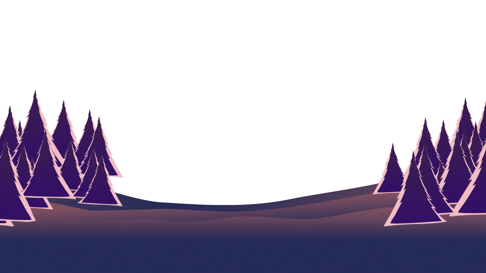

YUNJI KIM
PORTFOLIO
ABOUT ME
작은 물방울이 모여서 거대한 바다를 만든다는 말이 있습니다. 무언가를 꾸준히 이어나감으로서 얻는 경험과 끈기가 제 자신을 무한히 발전시킬 수 있다고 믿고 있습니다.
PROJECT
-
별마당 도서관
#크기변환 캐러셀#css 호버모션#slick기여도 : 개인 100%
기간 : 7일
별마당 도서관의 개별 웹 사이트를 구축하였습니다. PC화면에서는 CSS만을 사용하여 마우스 호버시 about의 콘텐츠가 우측에서 나타나도록 구현했습니다. video영역의 슬라이드에는 반응형을 적용시키고 active시 크기 변환이 되도록 하였습니다. 또한 카카오맵의 API를 사용하여 웹 상에서 별마당 도서관의 위치가 맵으로 나타나도록 구현했습니다.
-
포스코케미칼
#2depth메뉴#swiper#탭메뉴기여도 : 개인 100%
기간 : 6일
포스코케미칼의 메인페이지를 리뉴얼한 작업물입니다. 자동재생 슬라이드와 함께 뉴스영역의 세로 스크롤 슬라이드를 구현하기 위해 자바스크립트 라이브러리 swiper를 사용하였습니다. 메뉴의 개수가 많은 ESG영역은 제이쿼리를 사용하여 탭 메뉴로 만들었습니다.
-
트래블랜
#앱 기획/제작#UIUX#여행플래너앱기여도 : 개인 100%
기간 : 6일
여행에 대한 소비심리가 나날이 커지는 속에서 소비자가 자신의 기호에 따라 간편하게 여행의 일정을 짜고, 개개인의 기호에 맞는 여행을 할 수 있도록 돕는 것으로 소비자의 만족도를 높이기 위하여 여행어플 '트래블랜'을 기획하였습니다.
이전으로
다음으로